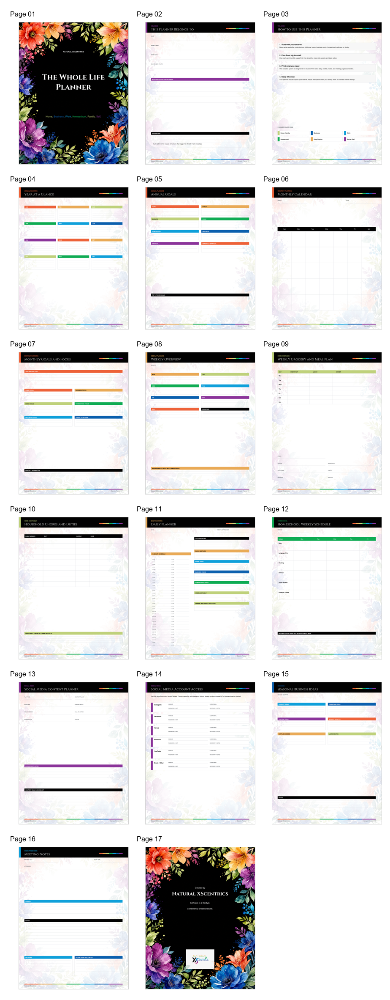

If the download does not start
Use the button again or contact Natural XScentrics.
Keep your Square purchase confirmation. If you have trouble opening the PDF, email NaturalXscentrics@gmail.com and include the name used at checkout.
Purchase complete
Thank you for choosing one flexible system for the many roles you carry. Save the PDF to your device and print the reusable annual, monthly, weekly, daily, home, homeschool, business, social media, wellness, meeting, and notes pages whenever you need them.

Personal-use download
If the download does not start
Keep your Square purchase confirmation. If you have trouble opening the PDF, email NaturalXscentrics@gmail.com and include the name used at checkout.
Print what supports your season
Start with the pages that solve today's planning needs, then reprint the recurring templates as your schedule and priorities change.